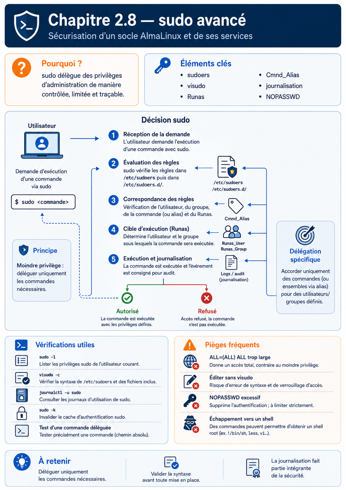

Chapitre 2.8 — sudo avancé
Campagne 2 — Contrôle des accès
« La sécurité ne consiste pas à donner tous les droits à quelques personnes. Elle consiste à donner exactement les bons droits, aux bonnes personnes, au bon moment. »
Vous êtes ici
PARTIE I — Construire un socle sécurisé
Campagne 1 [██████████] ✔
Campagne 2 [████████░░]
2.1 Les permissions UNIX ✔
2.2 ACL ✔
2.3 umask ✔
2.4 Attributs étendus ✔
2.5 PAM ✔
2.6 Politique de mots de passe ✔
2.7 Comptes système ✔
► 2.8 sudo avancé
2.9 passwd / shadow / group
2.10 Synthèse
Objectifs pédagogiques
À la fin de ce chapitre, vous serez capable de :
- comprendre pourquoi
sudoest devenu le standard de l'administration Linux ; - expliquer le fonctionnement interne de
sudo; - créer des règles de délégation de privilèges ;
- utiliser correctement
visudo; - comprendre les alias de
sudoers; - limiter précisément les commandes autorisées ;
- préparer l'intégration de
sudoavec FreeIPA.
Pourquoi ce chapitre existe
Dans le chapitre 1.8, nous avons découvert les bases de sudo. Nous avons appris à :
- exécuter une commande privilégiée ;
- comprendre le principe du moindre privilège ;
- éviter de travailler directement sous
root.
Nous allons maintenant aller beaucoup plus loin. Dans une entreprise, un administrateur ne reçoit presque jamais tous les privilèges. Prenons quelques exemples. Un opérateur peut :
- redémarrer un service.
Mais il ne peut pas :
- modifier la configuration réseau.
Une équipe de supervision peut :
- consulter les journaux.
Mais elle ne peut pas :
- modifier les fichiers système.
Un développeur peut :
- redémarrer Sentinel.
Mais il ne peut pas :
- administrer l'ensemble du serveur.
Comment exprimer précisément ces règles ? C'est précisément le rôle de sudo.
Pourquoi sudo a remplacé su
Pendant longtemps, les administrateurs utilisaient principalement :
su -
Ils saisissaient le mot de passe : root Puis réalisaient toutes leurs opérations. Cette méthode présente plusieurs inconvénients. Le premier est évident. Tous les administrateurs connaissent le même mot de passe. Impossible de savoir qui a réellement exécuté une commande. Le second problème concerne la traçabilité. Une fois connecté sous root, toutes les actions semblent provenir du même utilisateur. Enfin, cette approche accorde immédiatement tous les privilèges. Même lorsqu'un seul est nécessaire.
sudo adopte une philosophie différente. Chaque administrateur conserve son propre compte. Les privilèges sont accordés uniquement lorsque cela est nécessaire.
Une authentification personnelle
Prenons un exemple. L'utilisateur : alice exécute :
sudo systemctl restart sshd
Que se passe-t-il ? Alice ne fournit pas le mot de passe de root. Elle fournit son propre mot de passe. Pourquoi ? Parce que sudo cherche à répondre à une question.
Alice est-elle autorisée à exécuter cette commande ?
La décision repose donc sur l'identité d'Alice. Pas sur celle de root. Cette approche améliore considérablement l'audit des actions administratives.
Le déroulement d'une commande sudo
Une commande sudo met en jeu plusieurs composants.
On remarque immédiatement plusieurs points. sudo ne décide pas seul. Il utilise :
- PAM pour l'authentification ;
- le fichier
sudoerspour la politique d'autorisation.
Cette séparation est très proche de celle que nous avons étudiée avec PAM.
Le fichier sudoers
La politique de délégation est décrite dans : /etc/sudoers Il est cependant fortement déconseillé de modifier directement ce fichier avec un éditeur classique. Pourquoi ? Une simple erreur de syntaxe peut empêcher totalement l'utilisation de sudo. Pour cette raison, on utilise :
visudo
visudo vérifie automatiquement la syntaxe avant d'enregistrer les modifications. S'il détecte une erreur, il refuse la sauvegarde. C'est une protection extrêmement précieuse.
Une première règle
Prenons une ligne simple. alice ALL=(ALL) ALL À première vue, cette syntaxe semble mystérieuse. Décomposons-la. alice L'utilisateur concerné. ALL Toutes les machines. (Utile dans certains environnements distribués.) (ALL) Toutes les identités cibles. Autrement dit :
root;- ou un autre utilisateur.
Enfin : ALL Toutes les commandes. Cette règle signifie donc :
L'utilisateur
alicepeut exécuter n'importe quelle commande en tant que n'importe quel utilisateur.
Cette autorisation est très puissante. Elle doit être accordée avec prudence.
Comprendre la syntaxe de sudoers
La syntaxe du fichier sudoers peut sembler déroutante au premier abord. Pourtant, elle suit une logique très régulière. Une règle complète s'écrit généralement sous la forme suivante. utilisateur hôtes = (utilisateurs_cibles) commandes Chaque partie répond à une question.
| Élément | Question |
|---|---|
| Utilisateur | Qui demande le privilège ? |
| Hôtes | Sur quelle(s) machine(s) ? |
| Utilisateurs cibles | Sous quelle identité la commande sera-t-elle exécutée ? |
| Commandes | Quelles commandes sont autorisées ? |
Prenons un exemple plus précis. alice ALL=(root) /usr/bin/systemctl Cette règle signifie :
- l'utilisateur
alice; - sur toutes les machines ;
- peut exécuter ;
- la commande
/usr/bin/systemctl; - en tant que
root.
Remarquez qu'elle n'autorise pas automatiquement toutes les commandes. Le principe du moindre privilège est respecté.
Exécuter une commande sous un autre utilisateur
On associe souvent sudo à root. Pourtant, il peut exécuter une commande sous n'importe quelle identité. Par exemple :
sudo -u postgres psql
ou :
sudo -u nginx ls /var/cache/nginx
Pourquoi cette fonctionnalité existe-t-elle ? Parce qu'un administrateur doit parfois diagnostiquer un problème dans les mêmes conditions que le service lui-même. Il souhaite observer exactement ce que voit ce compte. Le schéma suivant illustre ce fonctionnement.
Le compte cible n'est donc pas obligatoirement root.
Les alias dans sudoers
Une infrastructure importante peut comporter des centaines de règles. Pour éviter les répétitions, sudoers permet de définir des alias. Il en existe plusieurs catégories.
| Alias | Utilisation |
|---|---|
User_Alias |
Regrouper plusieurs utilisateurs |
Runas_Alias |
Regrouper plusieurs utilisateurs cibles |
Host_Alias |
Regrouper plusieurs machines |
Cmnd_Alias |
Regrouper plusieurs commandes |
Prenons un exemple. User_Alias OPERATEURS = alice,bob,charlie Puis :
Cmnd_Alias SERVICES = \
/usr/bin/systemctl restart sentinel,\
/usr/bin/systemctl status sentinel
Enfin : OPERATEURS ALL=(root) SERVICES Nous obtenons une politique beaucoup plus lisible.
Pourquoi utiliser des alias ?
Imaginons une entreprise. Elle possède :
- cinquante administrateurs ;
- vingt serveurs ;
- une dizaine de services.
Sans alias, les règles deviennent rapidement illisibles. Avec les alias, la politique ressemble davantage à un document métier.
Cette approche améliore :
- la maintenance ;
- la lisibilité ;
- les audits.
Les fichiers dans sudoers.d
Le fichier principal : /etc/sudoers reste volontairement très réduit. La plupart des distributions utilisent aujourd'hui : /etc/sudoers.d/ Chaque application ou équipe peut disposer de son propre fichier. Par exemple : /etc/sudoers.d/sentinel ou : /etc/sudoers.d/backup On obtient alors une organisation beaucoup plus modulaire.
Cette approche facilite également les mises à jour et l'automatisation.
Une délégation très précise
Prenons un besoin réel. Les développeurs doivent uniquement redémarrer Sentinel. Ils ne doivent pas pouvoir :
- arrêter SSH ;
- modifier le pare-feu ;
- redémarrer le serveur.
Une règle adaptée pourrait être :
Cmnd_Alias SENTINEL_CTL = \
/usr/bin/systemctl restart sentinel,\
/usr/bin/systemctl status sentinel
Puis : %developpeurs ALL=(root) SENTINEL_CTL Le groupe : developpeurs ne reçoit que les droits nécessaires. Aucun privilège supplémentaire. Cette approche est très représentative de l'administration moderne.
Culture technique
Le projet GTFOBins recense des dizaines de programmes Unix pouvant être détournés pour :
- obtenir un shell ;
- lire des fichiers ;
- écrire des fichiers ;
- contourner certaines restrictions
sudo.
Par exemple, certains éditeurs, interpréteurs ou outils d'archivage permettent d'exécuter des commandes arbitraires. Cela ne signifie pas que ces logiciels sont vulnérables. Ils fonctionnent comme prévu. Mais leurs fonctionnalités peuvent être détournées lorsqu'ils sont exécutés avec des privilèges élevés. Lorsqu'un administrateur crée une règle sudo, il doit donc toujours se demander :
« Cette commande permet-elle indirectement d'exécuter d'autres commandes ? »
Cette réflexion est devenue un classique des audits de sécurité.
Piège classique
Une erreur fréquente consiste à croire qu'autoriser une commande revient à autoriser uniquement cette commande. Prenons un exemple. alice ALL=(root) /usr/bin/vim À première vue, cette règle paraît inoffensive. Pourtant, vim permet d'exécuter une commande shell. Par exemple :
:! /bin/sh
Si vim est lancé avec les privilèges de root, le shell obtenu héritera généralement de ces privilèges. Le problème ne vient donc pas de sudo. Il vient du choix de la commande autorisée. C'est pourquoi les commandes interactives sont rarement de bons candidats pour une délégation de privilèges.
TP 1 — Expérimenter sur AlmaLinux
Nous allons créer une règle sudo simple. Commencez par ouvrir un fichier dédié.
sudo visudo -f /etc/sudoers.d/laboratoire
Ajoutez par exemple :
Cmnd_Alias SENTINEL_STATUS = \
/usr/bin/systemctl status sentinel
testuser ALL=(root) SENTINEL_STATUS
Enregistrez le fichier. visudo vérifiera automatiquement la syntaxe. Vous pouvez ensuite afficher les droits accordés.
sudo -l -U testuser
Cette commande est particulièrement utile. Elle permet de vérifier les privilèges d'un utilisateur sans ouvrir de session avec celui-ci. Essayez ensuite de compléter progressivement votre règle. Par exemple, autorisez également : /usr/bin/systemctl restart sentinel Vous constaterez rapidement qu'une politique sudo se construit très naturellement lorsque les commandes sont clairement identifiées.
Les directives utiles de sudoers
Le langage sudoers ne se limite pas aux autorisations de commandes. Plusieurs directives permettent d'affiner le comportement de sudo. Voici quelques exemples.
| Directive | Rôle |
|---|---|
NOPASSWD: |
Ne pas demander de mot de passe pour certaines commandes |
PASSWD: |
Exiger explicitement un mot de passe |
Defaults |
Définir des options globales ou spécifiques |
Defaults logfile= |
Enregistrer les actions dans un fichier dédié |
Defaults timestamp_timeout= |
Définir la durée de validité de l'authentification |
Prenons un exemple. alice ALL=(root) NOPASSWD: /usr/bin/systemctl status sentinel Dans ce cas, Alice pourra consulter l'état du service sans ressaisir son mot de passe. En revanche, une commande plus sensible, comme un redémarrage, pourra continuer à exiger une authentification. Cette granularité constitue l'une des grandes forces de sudo.
Bonnes pratiques
L'utilisation de
NOPASSWDdoit rester exceptionnelle. Elle peut être justifiée pour certaines commandes de supervision ou dans des contextes d'automatisation maîtrisés, mais elle réduit une couche de protection contre les utilisations accidentelles ou opportunistes d'un compte déjà ouvert.
La mise en cache de l'authentification
Lorsque vous utilisez sudo, vous avez probablement remarqué un comportement particulier. Première commande.
sudo dnf update
Le système demande votre mot de passe. Quelques secondes plus tard.
sudo systemctl status sshd
Cette fois, aucun mot de passe n'est demandé. Pourquoi ? Parce que sudo conserve temporairement la preuve que vous vous êtes authentifié. On parle souvent de cache d'authentification ou de timestamp. Ce mécanisme améliore considérablement le confort d'utilisation. Il évite de saisir son mot de passe à chaque commande.
Comment fonctionne ce cache ?
Après une authentification réussie, sudo enregistre un horodatage associé à votre session. Tant que cet horodatage reste valide, les commandes suivantes peuvent être exécutées sans nouvelle authentification. On peut représenter ce fonctionnement ainsi.
Au-delà d'une certaine durée, le cache expire. Le mot de passe sera de nouveau demandé.
Régler la durée du cache
Cette durée est configurable. Par exemple : Defaults timestamp_timeout=15 signifie que l'authentification reste valable pendant quinze minutes. Une autre valeur est parfois utilisée. Defaults timestamp_timeout=0 Dans ce cas, chaque commande sudo demandera un nouveau mot de passe. À l'inverse : Defaults timestamp_timeout=-1 désactive pratiquement l'expiration du cache. Cette dernière configuration est généralement déconseillée sur les postes d'administration.
Le choix dépend du niveau de sécurité recherché et du contexte d'utilisation.
Invalider le cache
Il est parfois nécessaire de supprimer immédiatement les informations d'authentification mises en cache. La commande suivante permet de le faire.
sudo -k
Le prochain appel à sudo exigera alors une nouvelle authentification. Pour supprimer complètement les informations de cache associées à la session courante, on peut également utiliser :
sudo -K
La différence entre -k et -K est subtile, mais utile dans certains scénarios d'administration.
Vérifier ses droits
Nous avons déjà rencontré :
sudo -l
Cette commande affiche les privilèges du compte courant. Elle est également très utilisée lors des audits. Par exemple :
sudo -l
produit un résultat semblable à :
User alice may run the following commands:
(root)
/usr/bin/systemctl status sentinel
/usr/bin/systemctl restart sentinel
Avant d'exécuter une opération sensible, un administrateur peut ainsi vérifier exactement les autorisations dont il dispose.
Journalisation des actions
L'une des grandes forces de sudo est sa capacité de journalisation. Chaque utilisation peut être enregistrée. Selon la configuration, ces informations sont envoyées :
- vers
journald; - vers
syslog; - vers un fichier dédié ;
- ou vers une infrastructure de journalisation centralisée.
On peut représenter ce fonctionnement ainsi.
Cette traçabilité est essentielle. Elle permet de répondre à des questions comme :
- Qui a exécuté cette commande ?
- À quelle heure ?
- Depuis quel compte ?
- Avec quel résultat ?
Dans une infrastructure d'entreprise, ces informations sont précieuses lors des audits et des investigations de sécurité.
Culture technique
Dans les grandes infrastructures, les règles sudo ne sont plus toujours stockées localement. Elles peuvent être centralisées. Par exemple :
- FreeIPA ;
- LDAP ;
- Active Directory (avec certains mécanismes complémentaires).
Le fonctionnement devient alors le suivant.
Cette architecture présente plusieurs avantages.
- Une seule politique pour tous les serveurs.
- Une révocation immédiate des privilèges.
- Des audits simplifiés.
- Une meilleure cohérence de l'ensemble du parc.
Nous mettrons en œuvre cette architecture dans la deuxième partie de cette formation, lorsque Sentinel sera intégrée à FreeIPA.
Piège classique
Un autre piège consiste à multiplier les règles individuelles. Par exemple :
alice ...
bob ...
charlie ...
david ...
Quelques mois plus tard, le fichier sudoers devient très difficile à maintenir. Une meilleure approche consiste à raisonner par groupes. Par exemple : %sentinel-admins %exploitation %supervision Les utilisateurs rejoignent ou quittent les groupes. Les règles sudo, elles, restent stables. Cette organisation devient indispensable dès que plusieurs dizaines de personnes administrent une infrastructure.
TP 2 — Expérimenter sur AlmaLinux
Nous allons mettre en pratique plusieurs fonctionnalités de sudo. Commencez par afficher vos autorisations.
sudo -l
Puis videz le cache d'authentification.
sudo -k
Relancez ensuite une commande.
sudo id
Vous constaterez qu'un nouveau mot de passe est demandé. Essayez maintenant :
sudo -v
Cette commande ne lance aucun programme. Elle demande simplement à sudo de renouveler votre authentification. Elle est souvent utilisée dans les scripts d'administration afin de vérifier les privilèges avant d'exécuter une série d'opérations. Enfin, observez les journaux associés à sudo. Selon votre configuration, vous pourrez utiliser par exemple :
journalctl -t sudo
ou :
journalctl | grep sudo
Vous verrez apparaître les différentes demandes d'élévation de privilèges réalisées sur votre système.
Lire une règle comme une surface d'attaque
Une entrée sudoers n'autorise pas seulement un nom de programme : elle peut aussi contraindre ses arguments. Une règle sans arguments autorise généralement toutes les formes d'appel de la commande ; une chaîne d'arguments impose une correspondance. Les caractères génériques sont délicats, car ils peuvent couvrir des espaces, des chemins ou des options inattendues selon le contexte. Testez toujours avec sudo -l sous l'identité concernée.
Autoriser un éditeur, un interpréteur, un pager, un gestionnaire de paquets ou une commande capable de charger un fichier arbitraire revient souvent à autoriser une échappée vers un shell. NOEXEC peut bloquer certaines exécutions lancées par des programmes dynamiquement liés, mais ce n'est pas une frontière universelle. De même, une négation !commande au milieu d'une autorisation large est fragile : variantes de chemin, liens, arguments et outils équivalents peuvent contourner l'intention. Une liste positive courte est préférable.
Les variables d'environnement sont une autre entrée. env_reset limite ce qui est transmis, secure_path choisit le chemin de recherche des commandes et le tag SETENV élargit ce que l'appelant peut conserver. Pour une règle sensible, utilisez des chemins absolus, contrôlez les fichiers que la commande lit et évitez qu'un utilisateur puisse remplacer une bibliothèque, une configuration ou un exécutable auxiliaire.
Defaults env_reset
Defaults secure_path=/usr/local/sbin:/usr/local/bin:/usr/sbin:/usr/bin
%sentinel-ops ALL=(root) /usr/bin/systemctl status sentinel.service
La syntaxe correcte ne prouve pas que la délégation est sûre, mais elle reste un préalable. Éditez avec visudo, donnez aux fragments de /etc/sudoers.d un nom stable sans suffixe de sauvegarde, puis validez tout l'ensemble :
sudo visudo -cf /etc/sudoers
sudo -u operateur sudo -l
L'ordre des règles et des Defaults peut modifier le résultat. Évitez de compter sur une intuition de « première règle gagnante » : utilisez visudo, sudo -l et des tests positifs et négatifs.
Mission d'ingénieur — Déléguer l'exploitation de Sentinel
Écrivez un fragment qui autorise le groupe sentinel-ops à consulter l'état et à redémarrer uniquement sentinel.service, sans éditeur ni shell. Définissez la politique de mot de passe, de cache et de journalisation, puis testez une commande autorisée, une variante d'argument et trois commandes refusées. Le livrable doit analyser les possibilités indirectes offertes par systemctl et les fichiers modifiables par l'opérateur.
Impact sur Sentinel
Sentinel sera administrée par plusieurs profils d'utilisateurs. Tous n'auront pas les mêmes responsabilités. Par exemple :
| Rôle | Actions autorisées |
|---|---|
| Exploitation | Consulter l'état du service, le redémarrer |
| Développement | Consulter les journaux, redémarrer l'application de test |
| Supervision | Consulter les informations d'état uniquement |
| Administration système | Gérer l'ensemble de l'infrastructure |
Cette séparation sera mise en œuvre grâce à :
- des groupes ;
- des règles
sudodédiées ; - puis, plus tard, des politiques
sudocentralisées dans FreeIPA.
Ainsi, aucune équipe ne recevra davantage de privilèges que nécessaire. Nous appliquerons concrètement ce principe lors de la mise en production de Sentinel.
Synthèse
sudopermet de déléguer précisément des privilèges sans partager le compteroot.- L'authentification repose sur l'identité de l'utilisateur, pas sur le mot de passe de
root. - Le fichier
sudoersdoit être modifié avecvisudoafin d'éviter les erreurs de syntaxe. - Les alias (
User_Alias,Cmnd_Alias, etc.) améliorent la lisibilité et la maintenance des politiques. - Les règles doivent être les plus restrictives possible et n'autoriser que les commandes réellement nécessaires.
sudomet temporairement en cache l'authentification afin d'améliorer le confort d'utilisation.- Toutes les élévations de privilèges doivent être journalisées afin de garantir la traçabilité.
Pour aller plus loin
Depuis le début de cette campagne, nous avons manipulé les utilisateurs comme des objets relativement abstraits. Nous savons qu'ils possèdent :
- un UID ;
- un GID ;
- des permissions ;
- une politique PAM ;
- des privilèges
sudo.
Mais où toutes ces informations sont-elles réellement stockées ? Depuis les premiers systèmes UNIX, trois fichiers jouent un rôle central :
/etc/passwd
/etc/shadow
/etc/group
Leur format paraît simple. Pourtant, ils renferment une quantité impressionnante d'informations sur les identités du système. Dans le prochain chapitre, nous allons les décortiquer champ par champ, comprendre pourquoi les mots de passe ne sont plus stockés dans passwd, comment fonctionne réellement shadow et pourquoi ces trois fichiers restent, encore aujourd'hui, au cœur de l'authentification sous Linux.
← 2.7 — Les comptes système · 2.9 — Comprendre les fichiers d'identité Linux →
Schéma récapitulatif
